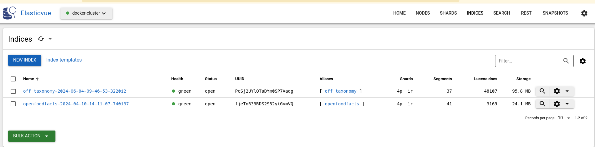

Tutorial - Using search-a-licious in your project#
So you have a dataset, or a project, with a collection of data you want to make searchable. Search-a-licious can help you have it done in a matter of few hours, while retaining your choices.
In this tutorial, we will see how we can use search-a-licious to search Open Food Facts data.
Setting up#
Clone the repository#
As an easy way to setup the project we will clone the repository:
git clone git@github.com:openfoodfacts/search-a-licious.git
cd search-a-licious
Create a configuration file#
We need to create a configuration file to indicate which fields we care about in our index.
For this we can create a conf/data/openfoodfacts-tutorial.yml file. It uses the YAML format.
Default Index and Indices#
At the top we have:
default_index: "off" # see 2
indices: # see 1
off: # see 2
-
Search-a-licious support serving more than one dataset at once, each dataset as it's own indice with it's own definition. So we start with the "indices" keyword.
-
We must give a name to our unique index. Let's call it
offas Open Food Facts. We also indicate that this is the default index for the API.
Index Configuration#
Now comes important indications for the index:
...
indices:
off:
index: # see 1
id_field_name: code # see 2
last_modified_field_name: last_modified_t # see 2
name: openfoodfacts # see 3
- The index section mark settings that are specific to the index.
- We have to then indicate two important fields:
- a field that contains a unique id for each item in the collection (the identifier).
In Open Food Facts dataset, it's simply the barcode, stored in
code- a field that contains the item modification date to enable incremental updates.
In Open Food Facts dataset, it's
last_modified_t
- a field that contains the item modification date to enable incremental updates.
In Open Food Facts dataset, it's
- a field that contains a unique id for each item in the collection (the identifier).
In Open Food Facts dataset, it's simply the barcode, stored in
- We have to give a sensible name to the index, which should be unique for our ElasticSearch instance. So we simply put "openfoodfacts".
Configuring Searchable Fields#
Let's continue with configuration of fields we want to be able to search.
...
indices:
off:
...
fields: # see 1
code: # see 2
required: true
type: keyword
product_name: # see 3
full_text_search: true
type: text_lang
labels_tags: # see 4
type: keyword
taxonomy_name: label
bucket_agg: true
labels: # see 5
full_text_search: true
input_field: labels_tags
taxonomy_name: label
type: taxonomy
nutriscore_grade: # see 6
type: keyword
bucket_agg: true
last_modified_t: # see 7
type: date
- now we are in the field section
- code is our identifier, it contains the barcode
- we mark it required for we should reject elements without it (it's certainly a bug)
- Each field must have a type which indicates how to handle it.
- For the code we choose the type
keywordwhich means it's a fixed token.
- product_name is also an important field.
- this time we want to be able to search part of it,
also it's a field that comes with different values for different languages,
that's why we mark it as
type: textlang - We also include this field in free text search,
that's the
full_text_search: truepart.
- this time we want to be able to search part of it,
also it's a field that comes with different values for different languages,
that's why we mark it as
labels_tagsis a field that contains labels of the product in a canonical form.- This is a field supported by a taxonomy.
Taxonomies gives translations and synonyms for terms of a specific field of interest.
In this case this is the
labeltaxonomy. We will see later on the configuration of taxonomies. This field will be useful to find all items matching a particular label in a precise way, using the label canonical form. - Also we plan to use the field for facets so we put the
bucket_agg: truepart.
- This is a field supported by a taxonomy.
Taxonomies gives translations and synonyms for terms of a specific field of interest.
In this case this is the
- The labels repeat information from
labels_tags(hence theinput_field: labels_tags) but is there to enrich the information of full text searches (type: taxonomy). With that, the full text search will take into account the translations and synonyms of labels. - Nutri-Score is a field with very basic values: "a", "b", ..., "e", "unknown" and "not-applicable",
as for code, a perfect case for a
keywordfield - last_modified_t, corresponding to last modification time, is an example of a date field.
Configuring Taxonomies#
Let's continue with configuration of taxonomies.
Taxonomies will be used in multiple ways by search-a-licious:
- to add synonyms for taxonomized values on full text search. For example you might search for "European Organic", to find items with the "EU Organic" label.
- to suggest values to search for in autocomplete (this can also be used in edit forms)
- to translate values from the results, for example as we display facets
...
indices:
off:
...
taxonomy:
sources: # see 1
- name: label
url: https://static.openfoodfacts.org/data/taxonomies/labels.full.json
exported_langs: # see 2
- en
- fr
index: # see 3
name: off_taxonomy
- We cited one taxonomy above:
label, here we define how to get it. - We must also defined which languages we want to use for this taxonomy. There is some trade-off between having a manageable size for the index and supporting more languages.
- finally we have to give a name to the Elasticsearch index that will contain the taxonomies.
Configuring Supported Languages#
We continue with languages configurations:
...
...
indices:
off:
...
supported_langs: ["en", "fr"]
lang_separator: "_"
- the list of supported languages tells which languages will be retained in our index
- the "lang separator" helps us tells that, the fields are suffixed by the language using this separator.
In our case it means, for example, that
product_name_frcontains the french version ofproduct_name.
We have our configuration ready. That was a bit though, but this was the hardest part !
Don't hesitate to read the Reference for Configuration file to learn more.
Setup the project#
In the project you can modify the .env file and change variables you need to change,
but for now, the only mandatory variable to change
is the one that will point to our configuration file.
...
# Path to the yaml configuration file
# This envvar is **required**
CONFIG_PATH=`data/config/openfoodfacts.yml`
See the Reference for Settings to learn about other settings.
Initial import#
Getting the data#
Now that it's all done, we are ready to start to import the data.
First we start the Elasticsearch index, we will also start the ElasticVue service to be able to look at what happens:
docker compose up -d es01 es02 elasticvue
There is an export of all the openfoodfacts data in JSONL available on at https://static.openfoodfacts.org/data . But it's a very big file ! For this tutorial we will prefer to use a sample of products at https://static.openfoodfacts.org/data/products.random-modulo-10000.jsonl.gz
Put this file in the data/ directory which is bind mounted in the container. On linux we can do it with:
wget https://static.openfoodfacts.org/data/products.random-modulo-10000.jsonl.gz -O data/products.random-modulo-10000.jsonl.gz
Import the data#
We will then import this file in our index, we have a specific command for that:
docker compose run --rm api python3 -m app import /opt/search/data/products.random-modulo-10000.jsonl --skip-updates
The first part is simply to run a command using our docker container.
The python3 -m app import part is to run the import command provided by our app module.
We use the --skip-updates flag because we don't have a redis stream to connect to, to look for updates.
We also need our taxonomy, and there is a command import-taxonomies to get it.
docker compose run --rm api python3 -m app import-taxonomies
You can read more about this process reading How to update index documentation.
Inspecting Elasticsearch#
We can take a look at what just happened by using ElasticVue, a simple but handy tool to inspect Elasticsearch.
Open http://127.0.0.1:8080 in your browser.
If it's the fist time, click "ADD ELASTICSEARCH CLUSTER" and use "No authorization", cluster name: docker-cluster, uri: http://localhost:9200
Click on the button which says there are 3 indices.
You shall see two indices:
- one named
openfoodfacts-<date of initial import>with aliasopenfoodfacts - one named
off_taxonomy-<date of initial import>with aliasoff_taxonomyAs you already guessed, the first contains our food products, and the second our taxonomies.

The "Lucene docs" column gives you an idea of the number of entries you have in each index.
You can click on an index to view it's content and have a feeling of what we just imported.
Using the search API#
Starting the service#
We don't have an interface to search at the moment, but we can use the API.
It would be perfectly ok to only deploy the interface, maybe because you will call it from your own application either to provide search to your users, or to implement a very specific feature which is based upon a search request.
Let's start our search-a-licious service:
docker compose up es01 es02 api frontend
Running our first query#
We start the api container, which is the search-a-licious backend,
and the frontend as it is a nginx acting as a reverse proxy.
Now let's open http://127.0.0.1:8000/docs
You can see the documentation of the various API offered by search-a-licious service.
Let's concentrate on the GET /search service. We can test it using the Try it out button.
We can try a simple search of fair trade in the q parameter, we get 17 results.
Interesting fields in the JSON we receive includes:
hitswhere we have the detail of each result. In each results we retrieve full information about an item, that's a lot of data. We might optimize this using thefieldsquery parameter.page: the current returned page,page_countthe number of pages, andpage_sizethe number of results per page.countis the total number of items returned.is_count_exact, when false indicate that for performance reason, we did not compute the total number of results, but there are at leastcountresults.
Sorting results#
As you get the results you might want them according to a particular order. Say we search for fair trade and we want the results to be sorted by the nutriscore grade.
We simply repeat the above query with q = fair trade and sort_by = nutriscore_grade.
Limiting fields#
In the previous example, we might only be interested in the name of the product and it's Nutri-Score.
We can limit the fields return by using the fields parameter.
Here it would be product_name,nutriscore_grade
Using filters#
We may want to be more precise on our request. Now let's ask products which really have "fair-trade" label.
For this we will use our query field in a more advanced way.
We can use this value for the "q" field: labels_tags:"en:fair-trade".
Using this we specify that we search for the key "en:fair-trade" in the value.1
We may then want to restrict our search to fair trade products that also have the "EU organic" label.
For this we can use labels_tags:("en:fair-trade" AND "en:eu-organic").
If we wanted products having one or the other labels_tags:("en:fair-trade" OR "en:eu-organic") would do.
We can also combine those filters with a search. Using cocoa labels_tags:"en:fair-trade"
will help find some fair trade cocoa.
You can find more about the search query syntax in Explain Query Language
Getting facets#
Remember in our configuration we added a bucket_agg: true on some fields.
This will enable us to get facets on those fields.
Let's go back to our API, and use cocoa labels_tags:"en:fair-trade" in the request,
and ask for facet nutriscore_grade.
We get a result with same fields as for previous searches, but we have a new facets fields.
It returns something like
"facets": {
"nutriscore_grade": {
"name": "nutriscore_grade",
"items": [
{
"key": "e",
"name": "e",
"count": 3,
"selected": false
},
{
"key": "d",
"name": "d",
"count": 2,
"selected": false
}
],
"count_error_margin": 0
}
}
As you can see we have the "nutriscore_grade" facet with two value: "e" and "d", and we got the document count for each value.
The selected field was deduced from an analysis of the request.
If we were to ask for the labels_tags facets with the same request,
the en:fair-trade label would be selected, as it is an active filter.
(note that it only works if you write the query in a specific way).
You can try and ask both facets by using nutriscore_grade,labels_tags as the facets parameter.
Creating a search Page using web components#
Now that we have played around with the API, we might want to create a search page to let users do their own search in a visual way.
That's were Search-a-licious also got you covered.
Search-a-licious provides web components that let you build your search page easily.
Building a search interface#
Let's try it and create a static html page. We won't care much about the "look and feel" for now, for sake of simplicity.
A simple way to serve the page, is to add a file in the frontend/public folder2
Let's create a tutorial.html file with a very basic initial content:
<!DOCTYPE html>
<html>
<head>
<title>Search-a-licious tutorial</title>
<!-- this makes the various searchalicious components available -->
<script type="module" src="./search-a-licious.bundled.js"></script>
</head>
<body>
<div id="search-bar">
<!-- the search bar where you can add text -->
<searchalicious-bar></searchalicious-bar>
<!-- the button to launch the search -->
<searchalicious-button></searchalicious-button>
<!-- sorting -->
<searchalicious-sort auto-refresh>
<searchalicious-sort-field field="nutriscore_grade">Best nutriscore</searchalicious-sort-field>
<searchalicious-sort-field field="-nutriscore_grade">Worst nutriscore</searchalicious-sort-field>
</searchalicious-sort>
</div>
<div id="results">
<!-- display of results -->
<searchalicious-results>
<!-- this define a template for results. We can use ${} expression with a result object containing result fields -->
<template slot="result">
<li>
<a href="https://world.openfoodfacts.org/${result.code}">${result.product_name}</a>
− Nutri-Score: ${result.nutriscore_grade}
</li>
</template>
</searchalicious-results>
<!-- a small display of the number of results -->
<searchalicious-count></searchalicious-count>
<!-- pagination -->
<searchalicious-pages></searchalicious-pages>
</div>
</body>
</html>
As you can see this is a big file but not so big for search page.
If you know html you should be able to read this quite easily. Let's focus on some elements:
- first of all we have to import the search-a-licious library to make it available.
This is done through the classical
scriptelement (inhead), but note thetype="module"property. - next we have the
searchalicious-barcomponent. This is the central component. Not only will responsible for the input in the search bar, but it also centralize the search options. - then we have the
searchalicious-button, which, as you guessed, is just responsible to launch the search (hitting enter in the search bar also works, but it might be more evident for some users with a button) - Sorting is a bit more complex, we have the
searchalicious-sortcomponent, and inside we added the options we want to offer for sorting. Thefieldproperty takes the same value as you would put in thesort_byparameter of the search API, and the inner text will be displayed to the user. - To display our results, we need the
serachalicious-resultscomponent. Inside it we need to define a template, with the propertyslotset toresult. In this template we can use simple variable interpolation as in a javascript template literal, with theresultvariable containing one search result, as returned by the API. This will be used to display each results. As the results use a<ul>element, it's better to enclose your result in a<li>. - The
searchalicious-countcomponent will simply display the number of results. - Finally the
searchalicious-pagescomponent is there to display a list of pages.
Trying our interface#
Let's try to use it !
We can go to http://localhost:8000/static/tutorial.html and see our interface.
FIXME screen capture
We can type fair trade in the search bar, hit the search buttons and see results displayed.
FIXME screen capture
We can use the pages navigation to browse all results.
We can also type a more advanced search like cocoa labels_tags:"en:fair-trade"
You can also test that sorting by best or worst nutriscore is working just fine !
If you are curious, you can open the dev toolbar (F12), go in the network tab, select to only view XHR requests (requests sent by javascript), and see how each search is using the search API.
-
Note that we have to use "" around value here, because the value contains a ":" inside.
labels_tags:en:fair-tradewould be interpreted as asking for a field named labels_tags.en having the value fair-trade. ↩ -
this only works right away if you are using the service in developer mode, which should be the case if you followed this tutorial. Of course in production, this might be served by your own servers. ↩